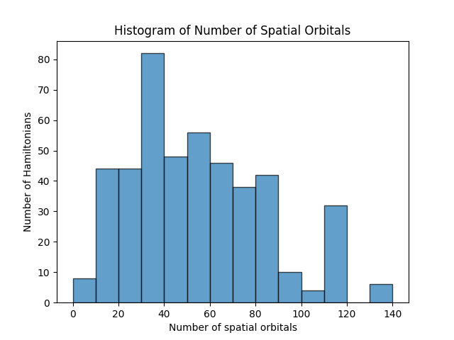
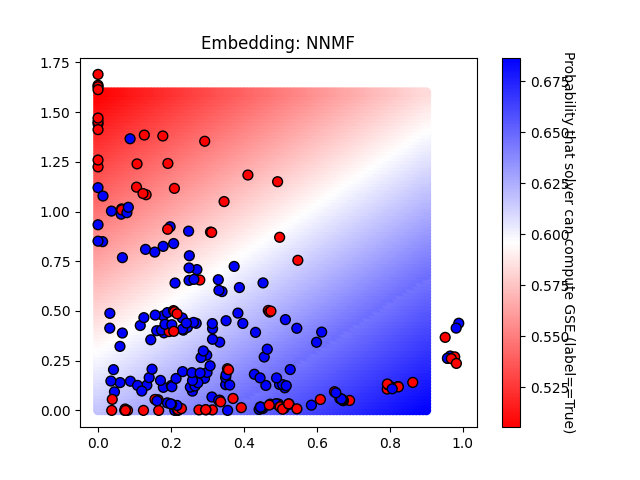

Report created on 2024-12-17-16-44
https://github.com/isi-usc-edu/qb-gsee-benchmark
Input data: aggregated_solver_labels_2024-12-10-07-10.csv, last modified Wed Dec 11 11:17:02 2024
Input data: Hamiltonian_features.csv, last modified Mon Dec 16 09:53:12 2024
WARNING! We only have features calculated for 229/230 Hamiltonians. This report is based on partial results!
number of problem_instances: 82
problem_instance.json with the most tasks: 999999
number of Hamiltonians (i.e., tasks): 230
minimum number of orbitals: 6
median number of orbitals: 53.5
maximum number of orbitals: 135

number of unique participating solvers: 2
solver_short_name: DMRG_Niagara_cluster_lowest_energy
performance_metrics_uuid: 8297b0b2-d56c-4d49-98b4-b22f1cadbf2b
creation_timestamp: 2024-12-10T12:17:57.033953Z
number_of_problem_instances: 82
number_of_problem_instances_attempted: 82
number_of_problem_instances_solved: 82
number_of_tasks: 230
number_of_tasks_attempted: 230
number_of_tasks_solved: 230
number_of_tasks_solved_within_run_time_limit: 230
number_of_tasks_solved_within_accuracy_threshold: 230
max_run_time_of_attempted_tasks: 80820.729907066
sum_of_run_time_of_attempted_tasks: 1824772.0337238186
solvability_ratio: 0.7533
f1_score: [0.7638888888888888, 0.8776978417266187]
ml_metrics_calculator_version: 1

solver_short_name: DF_QPE
performance_metrics_uuid: 32034c2e-2319-4da8-8d99-65d0a3807291
creation_timestamp: 2024-12-10T12:17:57.483531Z
number_of_problem_instances: 82
number_of_problem_instances_attempted: 82
number_of_problem_instances_solved: 82
number_of_tasks: 230
number_of_tasks_attempted: 230
number_of_tasks_solved: 230
number_of_tasks_solved_within_run_time_limit: 230
number_of_tasks_solved_within_accuracy_threshold: 230
max_run_time_of_attempted_tasks: 696389950.5024
sum_of_run_time_of_attempted_tasks: 1091561520.6118402
solvability_ratio: None
f1_score: None
ml_metrics_calculator_version: 1